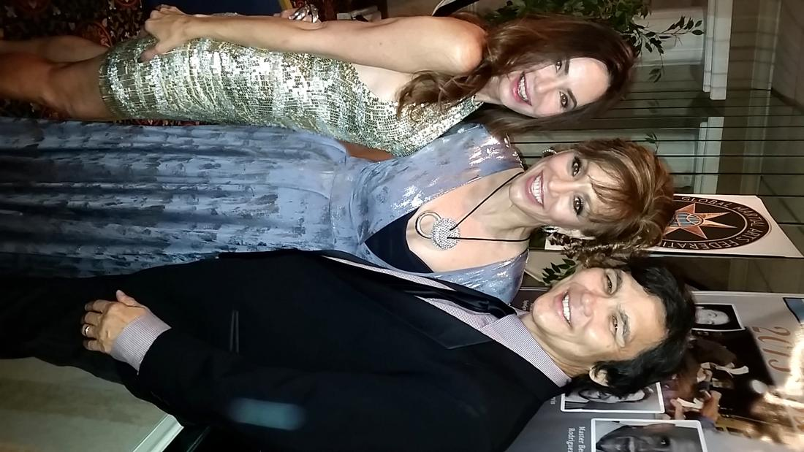
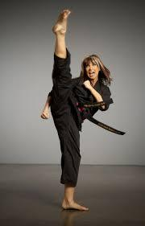

Cynthia Rothrock
Don The Dragon Wilson, Cynthia and myself were all honored by the Federation of Martial Arts for our contribution – seriously I’m in good company!!
www.SpinGym.com

My good friend Cynthia Rothrock is one of the greatest martial arts action stars in the world! She is the undisputed “Queen of Martial Arts films”.
Cynthia is not only a great action star, but she is truly incredibly accomplished martial artist holding 5 Black Belts in various Far Eastern martial disciplines. These Arts include; Tang Soo Do (Korean), Tae Kwon Do (Korean), Eagle Claw (Chinese), Wu Shu (contemporary Chinese), and Northern Shaolin (classical Chinese).
When she was a 13-year-old growing up in Scranton, Pennsylvania, she started taking lessons at her parents best friends private gym. Little did she know at the time that this casual interest would lead to a full-time professional career. Her natural abilities were quickly recognized by her martial arts teachers and they encouraged her to enter open karate competition, By the time she had earned her first Black Belt she was well on her way to becoming a martial arts champion. By 1982 Cynthia was one of the premier Kata (forms) and weapon competitors in the United States. Competing in divisions that were not segregated by male-female categories, she literally captured every title in both open and closed karate competition. From 1981-1985 she was the undefeated World Karate Champion in both forms and weapon competition. Establishing a legacy of wins and accumulating hundreds of trophies for her martial arts prowess; a feat that is unparalleled even to this day! She is a consummate performer with such Chinese weapons as the Chinese Double Broad Swords, Staff, Chinese Nine-section Steel Whip Chain, Chinese Iron Fan, and an assortment of Okinawan Kobudo and Japanese Bugei Weapons.

As a Forms and Weapon Champion, Cynthia Rothrock has traveled the world performing the intricacies of her martial arts arsenal. With precision flare and panache she has demonstrated before hundreds of thousands of spectators across the globe. Her “action-packed” self-defense and fight scenario performances garnered her the reputation as a consummate professional in the World of Martial Arts.This international exposure soon propelled her to martial arts celebrity status and within a mere period of less than two years Cynthia became a household name in martial arts circles. In addition to being featured on the cover of virtually every martial arts magazine in the world, Cynthia has been featured in over 300 stories and articles in national and international publications. Some of these magazines include Black Belt Magazine (United States), Inside Kung-Fu (United States), Martial Arts Training (United States), Martial Arts Stars (United States), Inside Karate (United States), Sensei (Spanish-Argentina), Australian Fighting Arts, China Sports (Beijing, China), Budo (Brazil), Combat Sport (Spanish-Brazil), Combat Magazine (England), Sushido (French), Kung-Fu Wu Shu (French), Karate Budo Journal (Germany), Australian Tae Kwon Do, The Fighters (England), Martial Arts Illustrated (England), Michael De Pasquale Jr.’s Karate International (United States), Budo Karate (Japan), Banzai International (Italy), Czarny Pas (Poland), Cinturon Negro (Spain), Ninja Weapons (United States), El Budoka (Spain), Kicksider (Germany), Impact Magazine (Germany), Karate Illustrated (United States), The Swedish Fighter’s International (Sweden), Master (United States), Kung-Fu Illustrated (United States), The Fighter (Thailand), Masters Series (United States), The Martial Arts Gazette (United States), Karate Profiles (United States), Sport Karate International (United States), The World of Martial Arts (United States), The Dojo (United States), and hundreds of National and International newspapers.
Cynthia Rothrock is also one of the very select individuals to be inducted into the Black Belt Hall of Fame and Inside Kung-Fu Hall of Fame. Inclusions in such renowned organizations as the Martial Arts Gallery of Fame, MARTIAL ARTS, Traditions, History, People, The Martial Arts Sourcebook, and dozens of other historical reference books of martial significance.
Cinematically, Cynthia burst onto the scene like a stick of dynamite after “starring” in a Kentucky Fried Chicken commercial in the early 1980s. Soon there after Producers and Directors recognized her martial arts skills and her career began a steady climb upward. Cynthia’s first full length motion picture was Yes Madam also starring Michelle Yeoh. The movie turned out to be a hit and broke all box office records in Hong Kong,
Cynthia and Michelle were launched and on their way to becoming two of the most successful female action stars in the world, Putting it briefly, when Cynthia was invited to Hong Kong to appear in motion pictures, she didn’t know what to expect. She thought they were going to do period pieces where she would have to wear tight pigtails and traditional Chinese costuming. To her surprise she soon thereafter discovered that she would be starring in Chinese action films set in modern times with contemporary themes,
As a result Cynthia Rothrock spent five years in Hong Kong starring in Asian produced motion pictures. In that time she had starred with kung-fu greats Samo Hung and Yuen Biao. She was even offered a role opposite of Jackie Chan in Armour of Gods, but Jackie got injured so the company instead put her in Righting Wrongs with super star Yuen Biao. During that Asian tenure she, unbeknownst to her, has set a record of becoming the very first non-Chinese westerner to carry an action movie single-handedly in Hong Kong. In fact, she left Hong Kong as one of the most celebrated action stars in Hong Kong’s cinematic history!
Hong Kong based mega-film producing consortium Golden Harvest Productions (co-producer of Enter the Dragon starring Bruce Lee with Warner Brothers) decided to try and launch Cynthia’s United States film career with a series of action films called China O’Brien and China O’Brien 2. Though not as popular in domestic theaters, these movies went on to become favorites in international videos stores and cable networks. Even today they are among some of the action martial arts aficionado’s all time favorites. Her astounding motion picture career has earned her the indisputable tide throughout the world as “Kung-fu Video Queen”.
Her array of foreign and domestic action-films are as impressive as her martial arts and weapon talents. Cynthia has starred in over 30 “action” films and/or video productions (made for TV) including; Defend Yourself (1985 Sybervision Learning Tape), Police Assassins (a.k.a. Yes, Madam 1985), Shanghai Express (1986), NO RETREAT, NO SURRENDER (1985), Magic Crystal (1985), Above the Law (a.k.a. Righting Wrongs 1987), Inspectors Wear Skirts (1988), Blond Fury (a.k.a. Lady Reporter 1988), China O’Brien II (1988), Martial Law (1989), ANGEL OF FURY (1989), Prince of the Sun (1989), Deadliest Art: BEST OF THE MARTIAL ARTS FILMS (1990), Fast Getaway (1990), MARTIAL LAW II (1990), Lady Dragon (1990), Tiger Claws (1990), Rage and Honor (1990), Rage and Honor II (1991), Lady Dragon II (1991), UNDEFEATABLE (1992), CITY COPS (1992), Irresistible Force (1993), GUARDIAN ANGEL (1993). Fast Getaway II (1994), EYE FOR AND EYE (1994), TIGER CLAWS II, (1995), Hercules: The Legendary Journeys (Not Fade Away 1996), SWORN TO JUSTICE (1996), CHECKMATE (1995), Night Vision (1996), Dukes of Hazard Reunion (1997), EEK THE CAT (1997), AMERICAN TIGERS (1991) and HOSTAGE (1997),
Cynthia Rothrock’s movie career “shooting schedule” has taken her to some of the most exotic locations on the planet. Paradoxically, she has also endured some of the worse climatic conditions that anyone in the moton picture could ever anticipate – all in the name of making “action-adventure” motion pictures.

Free · live on Zoom every Sunday
The Secret Pitch Formula
Join Forbes live for the Pitch Secrets Masterclass. Over 80,000 people have learned the 7-second hook, the three pitch patterns behind $2.5 billion in sales, and how to close without sounding salesy. Free, with a gift worth $500 for registering.
Sundays, 2 p.m. PT / 5 p.m. ET. Registration and the Zoom link are at pitchsecretstraining.com.